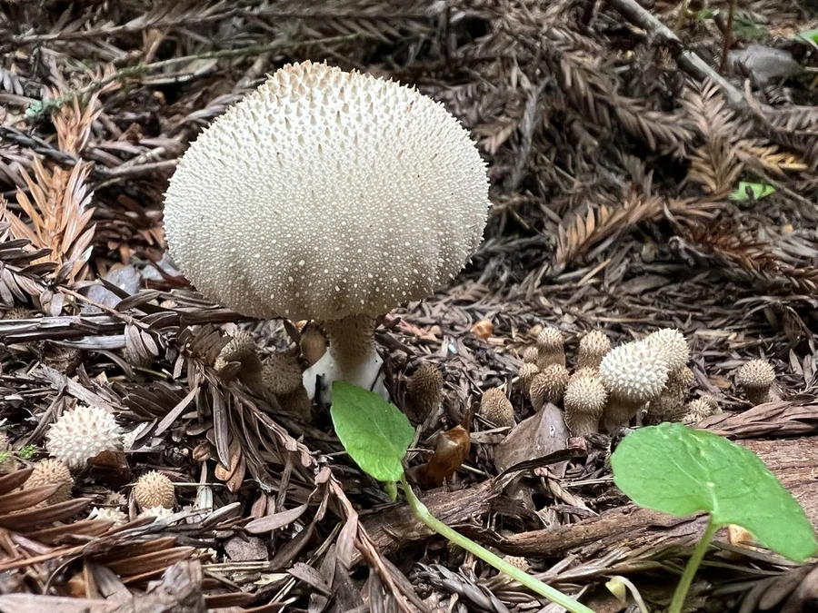

真菌 · 真菌界
马勃 Lycoperdon perlatum

常见于草地与林地的球形真菌，成熟后顶端开孔，轻触即喷出大量褐色孢子，是夏秋雨后最容易被发现的真菌之一。
- 分类
- 门担子菌门纲伞菌纲目伞菌目科蘑菇科属马勃属
- 栖息环境
- 草地、林缘、牧场与落叶层，夏秋雨后常见
- 地理分布
- 北半球温带地区广泛分布，中国多地常见
- 保护级别
- 未评估；常见腐生真菌
物种志
马勃的子实体幼时近球形或梨形，表面灰白至淡褐色，布满细小疣状突起；内部初期白色、质地紧实，成熟后逐渐变为黄褐色粉末状孢子团。此时顶端会裂开一个小孔，雨滴、动物踩踏或轻触都会让孢子像烟雾一样喷出，借风力传播。
马勃广泛分布于温带草地、林缘和牧场，夏秋雨后常见，营腐生生活，分解土壤中的有机质。幼嫩时在部分地区被当作食用菌，但必须与有毒的硬皮马勃、鹅膏菌幼体等严格区分；成熟后孢子粉不宜食用。孢子粉末细小，过敏体质者应避免吸入。
形态与习性
- 子实体幼时球形或梨形，成熟后孢子团粉末状
- 孢子传播顶端开孔，触碰或雨滴触发喷出
- 生态腐生，分解草地与林地有机质
- 食用性幼体在部分地区食用，须严格鉴别
- 风险孢子粉可致过敏，成熟后不宜食用
趣味知识
- 马勃成熟后像“烟包”，轻触就会喷出一团褐色孢子雾。
- 它幼时内部是白色海绵状，成熟后才变成粉末状孢子团。
- 马勃与有毒的硬皮马勃外形相似，野外采食必须谨慎。